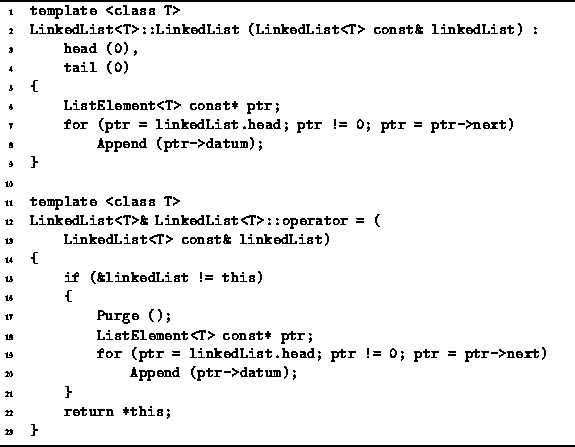
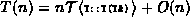
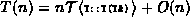

Data Structures and Algorithms
with Object-Oriented Design Patterns in C++
Data Structures and Algorithms
with Object-Oriented Design Patterns in C++
The code for the copy constructor and assignment operator (operator=)
of the LinkedList<T> class is given in Program  .
These functions are similar in that they both build a copy of a given list.
The copy constructor first initializes
the member variables to represent the empty list.
Then, it traverses the referenced list one-by-one,
calling the Append function to append the items
of the referenced list to the list begin constructed.
.
These functions are similar in that they both build a copy of a given list.
The copy constructor first initializes
the member variables to represent the empty list.
Then, it traverses the referenced list one-by-one,
calling the Append function to append the items
of the referenced list to the list begin constructed.

Program: LinkedList<T> Class Copy Constructor Definition
In Section the running time for the Append
function was determined to be  .
If the resulting list has n elements,
the Append function will be called n times.
Therefore, the running time of the copy constructor is .
If T is one of the built-in types,
.
If the resulting list has n elements,
the Append function will be called n times.
Therefore, the running time of the copy constructor is .
If T is one of the built-in types,  .
As a result, the running time of the copy constructor would be T(n)=O(n).
.
As a result, the running time of the copy constructor would be T(n)=O(n).
The assignment operator first calls Purge to make sure that the list to which new contents are being assigned is empty. It then builds a copy of the given list in the same way as discussed above for the copy constructor. The running time is equal to that of the Purge function plus that of the copy constructor.
 Copyright © 1997 by Bruno R. Preiss, P.Eng. All rights reserved.
Copyright © 1997 by Bruno R. Preiss, P.Eng. All rights reserved.